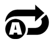

Witaj na wideoautomacie PUFFER GOES WILD! Poznaj nowe oblicze podwodnego świata i korzystaj z symboli rozszerzających się do rozmiarów 2x2, 3x3 i 4x4 w ponownych obrotach oraz wielu innych fantastycznych funkcji.
O GRZE
PUFFER GOES WILD to 5-bębnowy, 4-rzędowy automat ze 178 liniami.
PONOWNE OBROTY PUFFER GOES WILD
Runda bonusowa ponownych obrotów rozpoczyna się, gdy symbole Sharky'ego i Puffera pojawią się odpowiednio na pierwszym i ostatnim bębnie. W ponownych obrotach Puffer przemieszcza się o jedno miejsce w lewo. Jeśli obrót okaże się zwycięski, wygrana jest wypłacana, a gracz otrzymuje kolejny obrót, w którym Puffer przepływa o kolejne miejsce w lewo. Sharky na bębnie 1 może rozszerzyć Puffera do rozmiarów 2x2 (Puffer rozszerza się w tył). KOLEJNE SYMBOLE SHARKY'EGO NA BĘBNIE 1 POWIĘKSZAJĄ PUFFERA DO ROZMIARÓW 2X2, 3X3 I 4X4. SYMBOLE PUFFER WILD NA BĘBNIE 5 W PONOWNYCH OBROTACH RÓWNIEŻ ZACHOWUJĄ SIĘ JAK PŁYWAJĄCE SYMBOLE WILD I PODĄŻAJĄ ZA POCZĄTKOWYM. SHARKY NA BĘBNIE 1 MOŻE ROZSZERZYĆ KAŻDEGO PUFFERA OSOBNO. Ostatecznie możliwe jest utworzenie układów symboli 1x1, 2x2, 3x3 i 4x4.
JAK GRAĆ
-
Wybierz wartość stawki/bilonu.
-
Kliknij (dla pulpitów) lub dotknij (dla urządzen mobilnych) przycisk rundy, aby rozpocząć cykl gry.
PRZYCISKI GRY
|
Ikona |
Pulpit |
Mobilny |
Działanie |
|
|
Działanie | Działanie | Rozpoczyna pojedynczy cykl |
|
|
Maks. Zakład | (zawarty na ekranie wyboru stawki w ustawieniach menu) | Ustawia konfigurację zakładu na maksymalny poziom stawki. Przycisk rundy przyciśnięty, by rozpocząć. |
|  | Gra automatyczna | Przytrzymaj Rundę, by włączyć autogrę (lub zawarty w menu ustawień) | Pojawia się ekran menu, pokazujący opcje autogry, dostępne w grze, by równocześnie rozpocząć wielokrotne cykle. |
|
|
Wybór stawki | Wybór stawki (lub zawarty w ustawieniach menu) | Pojawiają się opcje stawki, gracz wybiera poziom zakładu. |
|
|
Menu ustawień | Menu ustawień | Otwiera się oddzielny ekran ustawień, oferujący poniższe: Dom; Audio; Ustawienia gry; Historia; Info/Pomoc i Postaw zakład (tam, gdzie jest to wymagane) |
|
|
Audio | (Główny obszar ustawień dostępny w menu ustawień) | Pulpit - otwiera menu ustawień audio, dostępne dla gracza, by niezależnie włączyć lub wyłączyć muzykę lub efekty. |
|
|
Turbo gra | (dostępny w menu ustawień gry) | Rozpoczyna zmianę w prędkości bębnów do szybkich obrotów |
PRZYCISKI USTAWIEŃ
| Symbol | Ikona | Zachowanie |
| Kasjer |
|
Inicjuje powrót do stron wpłat operatora, aby gracz mógł dokonać płatności na swoje konto ( zakładając, że taka funkcja jest dostępna w systemie operatora). |
| Tabele wygranych i pomoc |
|
Szczegóły ogólnych tabel wygranych i opisy funkcji w grze. |
| Historia gry |
|
Pokazuje graczowi listę cykli gry, jaką grał w danej sesji. |
| Ustawienia zakładu |
|
Tutaj gracz może określić wartość stawki w grze lub wybrać inną z dostępnych opcji. |
| Autogra |
|
Otwiera stronę, z jakiej można wybrać i zainicjować różne standardy i rozszerzone opcje autogry, w tym limit strat (tam, gdzie jest to właściwe) |
| Ustawienia gry |
|
Pokazuje dostępne różne ogólne opcje ustawień (np. ustawienia audio, wybierane przez gracza, by mógł określić jakie dźwięki chce słyszeć w czasie sesji) |
| Dom |
|
Zamyka bierzącą sesję gry (po końcowej podpowiedzi) i ekran wraca do stron menu operacyjnego głównej gry. |
INNE INFORMACJE O GRZE
-
Pokrywające się wygrane są dodawane i wypłacane graczowi.
-
Wartość bilonu - Pokazuje teoretyczną nagrodę stawki obecnego ustawienia. Wszystkie wygrane są pokazane w bilonie, który pownien być pomnożony przez wartość bilonu, aby przeliczyć w wygraną nagodę gotówkową.
-
Zakład - Pokazuje wartość zakładu obecnego ustawienia. Rozmiar zakładu to 1 bilon pomnożony przez mnożnik zakładu.
-
Maksymalny zakład (TYLKO dla pulpitu) - Ustawia wartość bilonu na największą możliwą.
-
Przycisk rundy - Rozpoczyna grę. Kiedy bębny się kręcą, przycisk rundy przekształca się w przycisk turbo stop. Naciśnij przycisk turbo stop, żeby natychmiast zatrzymać bębny.
-
Autogra - Możesz ustawić grę, by toczyła się bez konieczności naciskania za każdym razem przycisku rundy. Wybierz liczbę rund w autogrze, przyciskając przycisk autogry (lub przytrzymując przycisk rundy, by otworzyć menu autogry). Tam, gdzie ma to zastosowanie możesz wybrać dodatkowe warunki kiedy zatrzymać autogrę w ustawieniach gry. Limit straty w niektórych wersjach gry zapobiega stracie gracza ponad limit, ustawiony w czasie sesji autogry. Aby zatrzymać autogrę manualnie, naciśnij przycisk stop autogra.
-
Wygrana - Pokazuje wygraną dla bieżącej lub ostatniej wypłaconej wygranej.
-
Gotówka/Bilon - Pokazuje stan Twojego konta jako gotówkę (wartość pieniążną) lub bilon (liczba kredytów), w zależności od tego, co wybrał gracz. Domyślny ekran to gotówka.
ZWROT DLA GRACZA
-
Całkowity teoretyczny zwrot dla gracza wynosi 95,513%
DODATKOWE INFORMACJE
-
Wszystkie kombinacje wygranej są płacone od lewej do prawej w różnych kombinacjach, każda z nich zaczyna się na bębnie 1, poza kombinacjami scatter, które pokazują się na 1. i 5. pozycji.
-
Wygrane osiągnięte z cechami są płatne dodatkowo do różnych kombinacji.
-
W przypadku uszkodzenia sprzętu/oprogramowania gry, wszystkie dotknięte tym zakłady i wypłaty są unieważnione, a zakłady zwrócone.